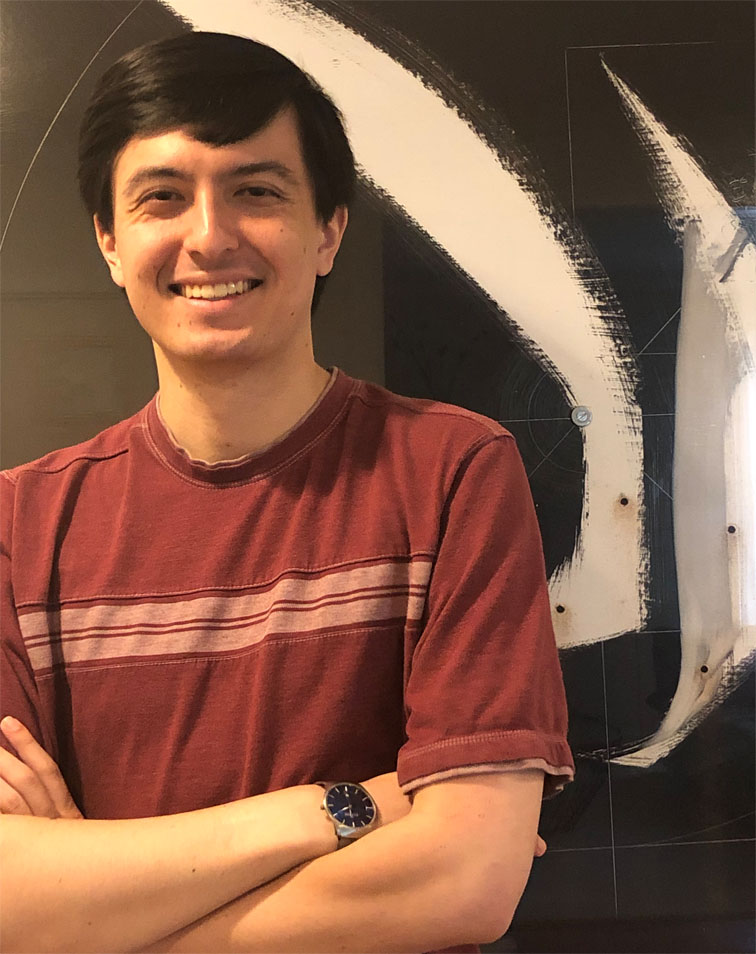

DAVIS WERTHEIMER |
|
|

Watson Research Center
36-115 davis.wertheimer at ibm com dww78 at cornell edu |
I'm a research scientist at IBM working on efficient Large Language Model training, deployment, and architecture design. Running LLMs at scale involves complex interconnected components and constraints. To build and deploy LLMs efficiently, we must understand these constraints and how models engage with them. I earned my Ph.D. in Computer Science from Cornell University in 2022 under Bharath Hariharan, researching Machine Learning and Computer Vision, with a focus on few-shot visual understanding. I studied how neural models generalize and adapt to new domains from partially relevant data, limited data, and indirect supervision (machine learning under very different constraints!). |
Publications
|
|
Education
|
|
Misc
Non-academic interests include fractal art, 3d printing jewelry, cooking, origami, and creating and making original ice cream and bread recipes. I also enjoy live art and music. |
|
| | |
"Begin at the beginning, and go on till you |
|